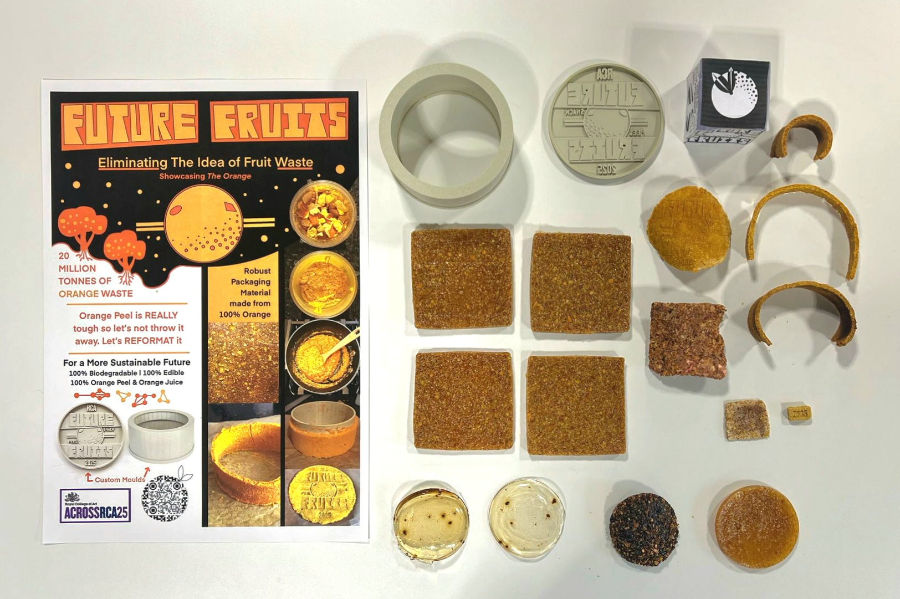

Presenting a Nutritious and Biodegradable, yet Durable Material
Future Fruits is an Initiative by five Royal College of Art students across five different creative discplines. Its purpose is to experiment with the way that fruit waste can be... unwasted. The fruit of focus was the orange, as orange peel is highly wasted, both industrially and amongst the general population.
Arshia Bansal, Max Eugeni, Benedict Jones, Jadwiga Ligeza, Bana Quronfuleh; Royal College of Art 2025